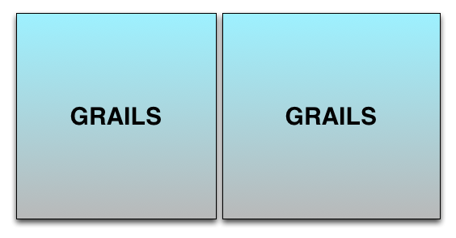
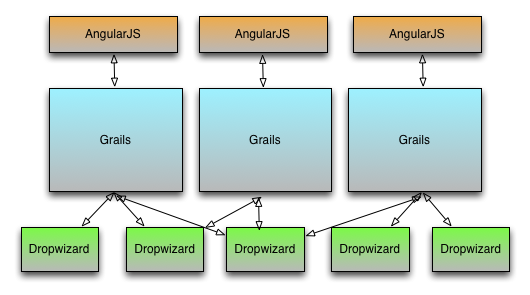

Micro-services with Dropwizard
Kyle Boon
Kyle Boon
Team Lead @ Bloomhealth
kyle.f.boon@gmail.com
@kyleboon
http://www.kyleboon.org

Architecture 2011
Architecture 2012

Architecture 2013

Micro-service architecture is the composition an application by multiple component services.
Micro-services are about single-responsibility and bounded countexts
Independance on various axes
- Select implementation and storage technology
- Test
- Deploy to production
- Recover from failure
- Monitor
- Horizontally scale
- Replace
Conway's Law implies that micro-services lead to small independent teams
Frameworks for micro-services
- Dropwizard
- Ratpack
- Spring Boot
- Finegle
- Scalatra
- Sinatra
- Flask
The stack at BloomHealth
- Groovy for programming
- Grails for web applications
- Dropwizard for JSON web services
- Gradle for builds
- Swagger for Service Discovery
- Spock for testing
- Gatling for Performace/Load Testing
- Redis for Caching
- RabbitMQ for messaging
What is Dropwizard
Dropwizard is a heavily opinionated framework for building web services
on the JVM. It is mostly glue around mature java libraries like Jetty, Jersey, Jackson and Guava.
Dropwizard has out-of-the-box support for sophisticated configuration, application metrics, logging, operational tools, and much more, allowing you and your team to ship a production-quality HTTP+JSON web service in the shortest time possible.
Who Created it?
@coda
As I've said before, the only reason Dropwizard exists at all is to provide opinions on what a service should be. I think they work better.It embeds Jetty because I think that works better.It uses Jackson because I think that works better.It uses Jersey because I think that works better.It has a single YAML configuration file because I think that works better. It wraps Logback because I think that works better.
It's fast
User dropwizard if you want get stuff done; don't use dropwizard if you want to shave yaks
The Application
Services are a collection of bundles, commands, healthchecks, tasks and resources. The service class defines all of the abilities of your application.
The Resource
Resources model what is exposed via your RESTful API. Dropwizard uses Jersey for this so these classes are mostly jersey annotations.
The Representation
Your POJOs will be turned into JSON via Jackson. Hibernate Validator lets you specify validation rules.
Bundles
Bundles are reusable blocks of behaviour designed to be reused across services. Assets, Hibernate and
Liquibase are all implemented as Dropwizard Bundles.
Commands
Commands add options to the command line interface of your service. For example the server starts based
on the 'server' command. Migrations run based on the 'db migrate' command. You might add your own command
for running functional tests or seeding the database.
Tasks
Tasks are run time actions available over the administration port. Dropwizard ships with a garbage
collection task. You might want to right a task to clean a cache by key.
Other Stuff
- Configuration
- Logging
- Hibernate/JDBI
- Clients
- Authentication
- Views